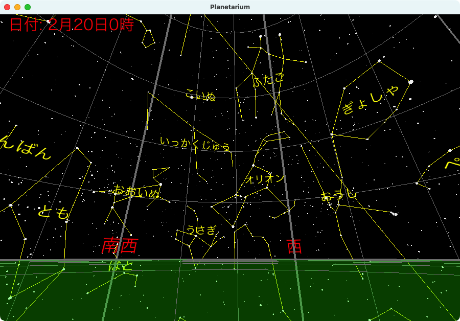

This website provides stellar data and constellation line data used in the Nikkei Software article "Creating a Planetarium with Python". These data files were created by the author of the article and are released as copyright-free.

Contains 8,789 stars with visual magnitudes of 6.5 or brighter. When the declination sign is 0, the degree, minute, and second values should be interpreted as negative.
| Column | Description |
|---|---|
| 1 | HIP Number: 1-120416 |
| 2 | RA: Hour (integer) |
| 3 | RA: Minute (integer) |
| 4 | RA: Second (decimal) |
| 5 | Dec: Sign (0: negative, 1: positive) |
| 6 | Dec: Degree (integer) |
| 7 | Dec: Minute (integer) |
| 8 | Dec: Second (decimal) |
| 9 | Visual Magnitude (decimal) |
676 lines of data created based on Stellarium's constellation data. Two HIP numbers are used to connect stars and form constellation lines.
| Column | Description |
|---|---|
| 1 | Constellation: Abbreviation |
| 2 | HIP Number |
| 3 | HIP Number |
Contains data for 692 stars that form constellation lines. When used with the constellation line data, it allows drawing of constellation patterns. When declination degree is negative, you must also apply negative signs to declination minutes and seconds.
| Column | Description |
|---|---|
| 1 | HIP Number |
| 2 | RA: Hour (integer) |
| 3 | RA: Minute (integer) |
| 4 | RA: Second (decimal) |
| 5 | Dec: Degree (integer) |
| 6 | Dec: Minute (integer) |
| 7 | Dec: Second (decimal) |
| 8 | Visual Magnitude (decimal) |
| 9 | Annual Parallax (milliarcseconds) |
| 10 | Proper Motion in RA (milliarcseconds/year) |
| 11 | Proper Motion in Dec (milliarcseconds/year) |
| 12 | B-V Color Index |
| 13 | V-I Color Index |
| 14 | Spectral Classification |
For information on how the data was created, please refer to the README.md.